Das Burschelstadion ist die Hauptanlage des TSV und das Zentrum vieler Heimspieltage am
Burschel.
Kapazität: rund 4000 Zuschauer. Dazu kommen 245 Sitzplätze, davon etwa 45 überdacht,
sowie rund 60 überdachte Stehplätze.
Direkt daneben liegen Aufwärmplatz, Stockplatz, Spielplatz und das Festivalgelände.
Schulsportplatz und Tennis
Der Schulsportplatz erweitert die Trainings- und Spielmöglichkeiten und entlastet den
Hauptplatz im laufenden Vereinsbetrieb.
Die Anlage bietet rund 2000 Plätze und 400 Sitzplätze ohne Überdachung.
Dazu gehören zwei Tennisplätze, eine Laufbahn, eine Sprunggrube und ein Mehrzweckplatz.
Mehrzweckhalle und Vereinsleben
Mit der Mehrzweckhalle bleibt der TSV auch in der Halle ganzjährig aktiv und kann
Trainings- und Sportbetrieb wetterunabhängig abbilden.
Chronik
Vereinsgeschichte zum Aufklappen
Einleitung · Aus der Chronik des TSV Hainsfarth
Als sich 1949 junge sportbegeisterte Hainsfarther im Gasthaus Rummel trafen, um ihren Turn- und Sportverein zu gründen, lag eine schwere Zeit hinter ihnen. Der zweite Weltkrieg war erst vier Jahre vorüber, die Bombenangriffe auf die Nachbarstadt Oettingen und die Schrecken des Krieges waren noch vielen in schlimmer Erinnerung. Das tägliche Leben war geprägt von materieller Not. Viele Heimatvertriebene mußten integriert und es mußte körperlich hart gearbeitet werde. Durch die Einführung der D-Mark kam das Wirtschaftsleben langsam wieder in Schwung und die amerikanischen Besatzungsmacht gestattete nach und nach politische, sowie gesellschaftliche Aktivität. Nur wenn mach diesen Hintergrund beachtet, kann man die Vereinsgeschichte des TSV richtig würdigen und einstufen.
1949 · Gründung des TSV Hainsfarth
Eine Gruppe um den damaligen Bürgermeister Josef Großhauser, Lehrer Adolf Thum und Emil Dantonello ließ über die damals übliche Art der Bekanntmachung durch den Gemeindediener Josef Kohnle "Ausschellen", daß sportbegeisterte Bürger in das Gasthaus Rummel zur Gründung eines Sportvereines geladen sind. Schon bei dieser allerersten Versammlung fanden sich 44 Bürger bereit, beizutreten und den Verein zu gründen. Als erstes Mitglied ist der damalige Bürgermeister Josef Großhauser eingetragen.
So wurde am 22. März 1949 der Turn- und Sportverein Hainsfarth gegründet.
Schon am nächsten Tag, den 23. März 1949, wurde die Anmeldung beim Bayerischen Landessportverband in München getätigt. In dieser Mitteilung heißt es unter anderem: "Zur weiteren Information sei Ihnen mitgeteilt, daß in die Vorstandschaft des Vereines folgende Herren anläßlich der Gründungsversammlung am 22.03.1949 gewählt wurden:
Vorstand: Josef Strauß Stellv. - Vorstand: Adolf Thum - Kassier: Josef Hauber - Schriftführer: Oswald Losert
Das Vereinslokal befindet sich im Gasthaus der Frau Georgine Rummel. Alle bei der Gründungsversammlung anwesenden Sportfreunde haben eine Beitrittserklärung unterschrieben, so daß unser Sportverein mit 44 Mitgliedern ins Laben gerufen wurde. Davon haben alle Mitglieder das 14. Lebensjahr erreicht." Amtlich wurde dies am 10. Mai 1949 vom Bayerischen Landessportverband München bestätigt und der Turn- und Sportverein Hainsfarth unter der Nr. 23338 registriert.
Am 16. März 1950 erhielt der Verein eine Satzung. In der Präambel zum Protokoll Nr. 01 - der Gründungsversammlung - schreibt Schriftführer Oswald Losert: "...seit bestehen der Landjugendgruppe Hainsfarth hat sich in unserer Gemeinde eine sich dauernd steigernde Sportbegeisterung gezeigt. Durch diesen Verein erkannte man deutlich, daß unsere Jugend auf der Suche nach Bahnen ist, welche zu frohen, gesellig-sportlichen Spielen führen. Gleich, ob Flüchtlinge oder Einheimische, alle zeigen sie das Bestreben, ihre Freizeit durch kameradschaftliches Beisammensein auszufüllen und draußen auf freiem Felde durch sportliche Wettbewerbe und Spiele ihr Können sich gegenseitig darzutun..." Bemerkenswert zum Gründungsprotokoll ist, daß am gleichen Abend die Sparten Bodenturnen, Faustball, Fußball, Leichtathletik, Schwimmen und Tischtennis installiert wurden.
Ebenso wurde der bereits vorhandene - den Normmaßen entsprechende - Sportplatz am "Hinteren Burschel" für alle Ballspiele gegen eine jährliche Pachtgebühr von 1 DM von der Gemeinde Hainsfarth angemietet. Interessant sind auch die damaligen Mitgliedsbeiträge, die monatilich einkassiert wurden:
10-14 Jahre 10 Pfennige / 14-18 Jahre 30 Pfennige / über 18 Jahre 50 Pfennige
("...bei Mitgliedern, die nicht in der Lage sind zum Zeitpunkt der Einhebung sofort zu bezahlen, kann dieser gestundet werden...")
Im Tätigkeitsbericht zur Generalversammlung vom 19. April 1950 sind bereits 206 Mitglieder aufgeführt, die sich auf die einzelnen Sparten so verteilt:
Dadurch, daß Bürgermeister Josef Großhauser und der Gemeindesekretär Oswald Losert äußerst positiv dem Sport zugetan waren, wurde schnellstmöglich das vorhandene Spielfeld am "Hinteren Burschel" wettspieltauglich gemacht.
Bereits im April 1950 wurde ein gewisser Herr Dietrich als Spielertrainer verpflichtet und der sportliche Erfolg stellte sich, bedingt auch durch den Zugang der Megesheimer Spieler (der Verein hatte sich 1951 aufgelöst), bald ein. Ungeschlagen wurde die Mannschaft in der Saison 1952/53 Meister der C-Klasse. Dieselbe Elf konnte auch 1953/54 ihren Titel wiederholen, da die Vereinsführung jeweils aus finanziellen Gründen auf den Aufstieg in die B-Klasse verzichtete.
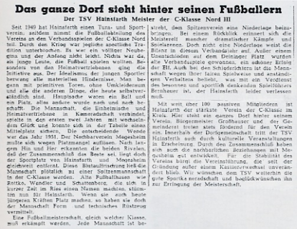
Zeitungsbericht zur Meisterschaft 1952/53
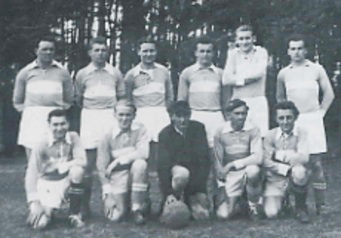
Die Hainsfarther Meisterelf
1954–1964 · Der neue Sportplatz am "Vorderen Burschel"
Im Rahmen der Flurbereinigung 1954/56 wurde am "Vorderen Burschel" ein neues Sportgelände dem TSV zugewiesen, das wesentlich näher am Ortsbereich lag als der Sportplatz am "Hinteren Burschel". Über das neue Übungsgelände berichtet die Rieser Nachrichten folgendes: "Das Grundstück liegt ebenfalls am "Burschel", aber nur noch rund sechshundert Meter in südöstlicher Richtung vom Ort entfernt. Das Sportgelände umfaßt 1,2711 Hektar. Früher wurden dort Burschelsteine gebrochen. Systematisch wurde in den vergangenen Jahren damit begonnen, die Fläche als Spielfeld herzurichten. Dazu waren große Erdbewegungen notwendig; besonders im Süden das Platzes mußte sehr viel Erdreich aufgeschüttet werden". Im Pachtvertrag mit der Gemeinde Hainsfarth wird das ca. 12000 qm große Areal dem Sportverein für eine jährliche Pachtgebühr von 10 DM überlassen. Großen Anteil an der Neugestaltung dieses Sportgeländes hatte der damalige 1. Vorstand Georg Seefried der in der schwierigsten Zeit unseres Vereins 1959 die Leitung des von der Auflösung bedrohten Vereins übernahm und unseren TSV in den folgenden Jahren wieder finanziell und sportlich nach vorne brachte.
Daß die Einweihungsfeier des neuen Sportgeländes am 16. August 1964 überaus gelungen war, belegen die rund 400 Autos und über 1500 Besucher, die im Protokoll extra vermerkt worden waren.
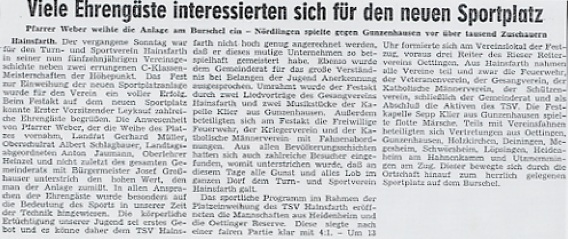
Zeitungsbericht zur Einweihung des neuen Sportplatzes
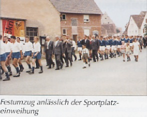
Festumzug anlässlich der Sportplatzeinweihung
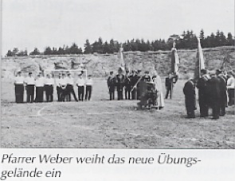
Pfarrer Weber weiht das neue Übungsgelände ein
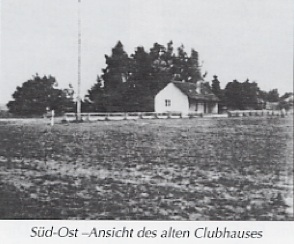
Süd-Ost-Ansicht des alten Clubhauses
Das neue Sporthaus, das als "massive Umkleidekabine" bezeichnet worden war, war für die damaligen Verhältnisse, obwohl kein Strom und Wasseranschluß vorhanden war, auf dem modernsten Stand, denn es hatte einen eigenen Duschraum. Aber das Duschwasser mußte in Tankfässern nach oben gefahren und in Wasserbehälter im Dachraum umgefüllt werden. Erst dann war Körperhygiene möglich.
1970 erfolgte der lang ersehnte Anschluß an die Rieswasserversorgung und ein Jahr später, also 1971, wurde von der Rummelsburg aus der Stromanschluß hergestellt. 1972 konnte somit elektrische Heizkörper installiert werden, ebenso ein Druckkessel mit 300 Liter Kapazität. Somit konnten auch die ersten Flutlichtmasten auf dem Hauptplatz 1971 installiert werden. Auch die herrlich gelegene Sommernachtsfestplatzecke wurde 1973 mit Strom versorgt, so daß dort Laternenpfähle gesetzt werden konnten. Alle diese Arbeiten wurden natürlich in Eigenleistung durchgeführt.
1950er–1970 · Sport in der Synagoge
Vielen Hainsfarthern ist sicherlich nicht mehr bekannt, daß die Vorstandschaft schon seit 1950 versucht hatte, eine eigene Turnhalle für ihre Sportler zu finden. In Verhandlungen mit den Vertretern der amerikanischen Besatzungsmacht wurde deutlich, daß die damals leerstehende Synagoge "für den Zwecke eines Turnvereines durchaus geeignet scheinen". Das Bauobjekt wurde dem damaligen Vorstand Strauß zum einmaligen Preis von 8000 DM angeboten. Der Kauf scheiterte wahrscheinlich an der dünnen Finanzdecke des Vereins. Totzdem fand die Synagoge mit der Raiffeisenvertretung Hainsfarth einen neuen Besitzer. Am 26. März 1955 wurde von der Vorstandschaft des Turn- und Sportvereins Hainsfarth an die Raiffeisenkasse ein Antrag zur Nutzung der ehemaligen Synagoge als Übungsraum gestellt. Bereits im April 1955 wurde diesem Ansuchen von seiten der Bank stattgegeben, wie folgende Zeilen aus dem Schreiben vom 24. April 1955 belegen: "....sie genehmigt in stets widerruflicher Weise Ihr Ansuchen. Das Sauberhalten, Reinemachen u. Herrichten des benötigten oberen Raumes, bleibt Sache des Sportvereins. Für Einrichtung elektrischer Beleuchtung u. Festsetzung einer kleinen Benützungsgebühr des besagten Raumes, wäre noch eine spezielle Aussprache mit der Vorstandschaft bzw. dem Vorsteher erforderlich."
Nach dieser Klärung des Nutzungsrechts wurde von den Sportlern eine solide Holzdecke eingezogen und in den 50iger Jahren wurde dort im Winter vorwiegend das Fußballtraining abgehalten.
Nachdem zu Beginn der "Sechziger" die Evangelische Kirchengemeinde Oettingen den Gebäudekomplex erworben hatte, wurde auch von den diesem neuen Träger die Benutzung des oberen Stockwerkes erlaubt. Ab 1965 fand in diesem "Übungsraum" während der Wintermonate des Fußballtrainings statt. Zum Duschen ging man in die Grundschule. 1970 wurde dem TSV von der evangelischen Kirche ein Kaufangebot unterbreitet, aber wie schon in den Jahren vorher scheiterte eine mögliche Übernahme an den geringen Finanzmitteln des Vereins.
Erst als der Schulzweckverband Oettingen eine Dreifachturnhalle erstellen ließ, erhielten auch die Hainsfarther Kicker Trainingsstunden zugeteilt, so daß man nun im optimalen Räumen üben konnte. Die beste Lösung ergab sich aber erst mit der Fertigstellung der neune Mehrzweckhalle 1985 in Hainsfarth.
1965–1969 · Erster Aufstieg in die B-Klasse
Dank dieser vorzüglichen Anlage am "Vorderen Burschel" blieben die sportlichen Erfolge nicht aus. Der Gewinn des Scheiblepokals 1965 im Endspiel gegen Mönchsdeggingen durch das goldene Tor von G. Ruppert war nach Jahren der Erfolglosigkeit wieder ein Schritt aus der Talsohle. Nach langer Zeit in der C-Klasse, in der man überwiegend nur mittlere oder noch schlechtere Plazierungen hinnehmen mußte, gelang 1967/68 der große Wurf. Das Team um C. Breznik wurde Vizemeister in der C-Klasse und zum ersten Mal in der Vereinsgeschichte stieg der TSV Hainsfarth in die B-Klasse auf.
In der 30iger Festschrift steht hierzu: "Es war vor allem der Verdienst unseres Spieler und Trainers Carlo Breznik aus Maribor in Jugoslawien, ....und außerdem haben auch einige Spielerpersönlichkeiten zu diesem Erfolg aus der Nachbargemeinde Steinhart, vor allem Torwart Schwarzländer, beigetragen." Leider stieg die Mannschaft nach einem Jahr B-Klasse wieder ab.
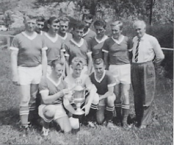
1:0 Sieg im Scheible-Pokal gegen Mönchsdeggingen
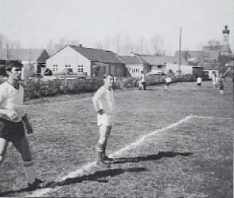
Spielertrainer C. Breznik
1969 · 20-Jahrfeier des Turn- und Sportvereins
Nachdem das zehnte "Geburtstagsfest" des TSV 1959 nicht abgehalten worden war, es waren zu diesem Zeitpunkt nur noch 17 Fußballer als Mitglieder im Verein eingetragen, war die 20-Jahrfeier vom 24. Bis 26. Mai 1969 eine willkommen Gelegenheit, sich als intakter, wachsender Verein zu repräsentieren. Schirmherr dieser Feier war der damalige Bürgermeister und große Förderer Josef Großhauser, der unter den Gästen den späteren bayerischen Wirtschaftsminister Anton Jaumann, den langjährigen Orstgeistlichen Josef Weber, sowie den Notar Dr. Thalhofer begrüßen konnte. Das damalige Werbespiel gewann die Jugend des 1. FC Nürnberg gegen die Jugendlichen vom SSV Dillingen. An allen drei Festtagen unterhielt die Tanzkapelle Klier aus Gunzenhausen die zahlreichen Besucher.
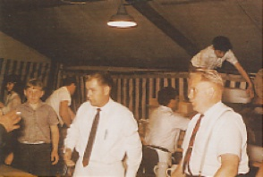
20-Jahrfeier im Festzelt
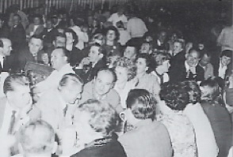
Jubiläumsabend mit Gästen und Vereinsfreunden
1970er · Wiederaufstieg in die B-Klasse
Nach dem Abstieg baute man in den nächsten Jahren verstärkt Jugendspieler ein, die unter dem Trainergespann Keller Erhard / Taglieber Manfred zu einer homogenen Einheit zusammenwuchsen. 1973/74 wurde man zum dritten Mal Meister, aber zum Leidwesen aller Verantwortlichen stieg man wiederum nach nur einem Jahr B-Klassenzugehörigkeit ab.
Da der direkte Aufstieg im Folgejahr nicht realisiert werden konnte, fiel das Team immer mehr auseinander und der Tiefpunkt wurde in der 1976/77 mit dem vorletzten Platz in der C-Klasse II erreicht.
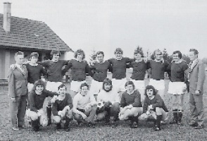
Mannschaft bei der Meisterschaft 1973/74
1973–1981 · Auf der Suche nach einem Ausweichplatz
Schon frühzeitig stellte sich heraus, daß ein Rasenplatz für Punktspielbetrieb und Trainingszwecke zu wenig ist. Der damalige 1. Vorstand Oswald Losert stellte treffend fest: "Der große Spielbetrieb hatte in den letzten Jahren das Spielfeld stark strapaziert. Außer großen Unebenheiten war auch von der Grasnarbe nicht mehr viel zu sehen." Mit dem Beginn des Ausbaus eins Ausweich- bzw. Trainingsplatzes wurde 1973 unmittelbar an der Südseite des Hauptfeldes begonnen. Hierzu mußten wiederum große Erdbewegungen durchgeführt werden, um ein einigermaßen brauchbares Trainingsgelände entstehen lassen zu können.
Bis der Hauptplatz wieder bespielbar war, wurden auf der Wiese von Herrn Wiedemann, in der Nähe der alten Kläranlage, Punktspiele ausgetragen. Nach Ablauf des Pachtvertrages wurden ab 1974 die Wisengrundstücke von Herrn M. Engelhardt und Herrn A. Mayer an der Kreisstraße nach Oettingen nahe des Bahndammes als Fußballplatz für Wettkampf- und Trainingsspiele benutzt. Höhepunkt der Sportplatzmisere war das Auswichen der Fußballer in der Saison 1981 nach Auhausen, da der Ausweichplatz am Burschel nicht die erforderlichen Normmaße aufwies und das eigentliche Sportstadion den Belastungen von acht Mannschaften nicht mehr gewachsen war.
1975 · 25-jähriges Jubiläum
Diese Jubiläum sollte eigentlich 1974 stattfinden, aber "wegen notwendiger Sportplatzmodernisierung", wie es in den Rieser Nachrichten stand, fand diese Veranstaltung ein Jahr später vom 20. bis 22. Juni 1975 zusammen mit dem Soldaten- und Veteranenverein am Burschel statt. Weiter kann man lesen:
"Mit etwas Verzögerung, jedoch nicht unbegründet, wird das 25jährige Bestehen gefeiert: Das Sportgelände wurde inzwischen neu gestaltet, der Rasen neu eingesät, eine elektrische Leitung zugelegt, und eine Platzbeleuchtung installiert, vom Hochbehälter der Bayerischen Riesgruppe wurde eine Wasserleitung verlegt, ein Ausweichplatz planiert und das Sportheim einer Renovierung unterzogen."
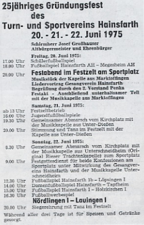
Festprogramm zum 25-jährigen Gründungsfest 1975
1972–1985 · Damenfußball – nur von kurzer Dauer
Auch das knappe Sportplatzangebot konnte unsere fußballbesgeisterten Damen nicht daran hindern, ab 1972 dem runden Leder nachzujagen. In den Anfangsjahren wurden unter der Leitung von Herrn Rudolf Seifert Freundschaftsspiele gegen benachbarte Damenteams auszutragen. So endete einer der ersten Vergleiche 1972 gegen den SC Wallerstein 1:1.
In der Saison 1979/80 wurde zum ersten Mal an der Punktrunde teilgenommen. Hier belegte man als Neuling einen beachtlichen 5. Rang unter acht Teams. Der damalige 1. Vorstand O. Losert schrieb in der Festschrift 1979: "Sie (=Damenmannschaft) ist zu einem nicht mehr wegzudenkenden Bestandteil unseres Vereins geworden, hat neue Freunde für den Verein gewonnen und neuen Schwung und Farbe hineingetragen."
Leider musste das Damenteam bereits 1985 wegen Spielermangel das Damenteam von der Punktrunde wieder abgemeldet werden und seither ruht in diesem Bereich jede Aktivität.
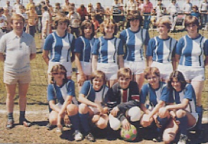
Damenmannschaft des TSV Hainsfarth
1977–1982 · Aufstieg von der C-Klasse in die A-Klasse
Betrachtet man zurückblickend die Jahre 1977 bis 1982, so war die Verpflichtung des Oettinger Fußballtrainers Hans Reichert ein wahrer Glücksgriff für den Verein. Die Herausforderung das Unmögliche, nämlich in Hainsfarth etwas verändern zu können, und die damaligen erfolgreichen, ehrgeizigen A-Jugendspieler dürften die beiden Hauptmotive für die Übernahme des Traineramtes während der Winterpause 1977 gewesen sein.
Sein Einstand mit dem vorletzten Platz in der C-Klasse war zwar wenig gelungen, aber der Oettinger plante bereits damals für die nächsten Jahre. Im Training legte er größten Wert auf körperliche Fitness, Ausdauer und Schnelligkeit. Seine Waldläufe rund um den Burschel, in das "Kach", und ausgedehnte Fahrradtouren sind noch vielen in guter Erinnerung. Der akribischen Arbeitsweise von Herrn Reichert, der über jedes Spiel, über jeden Spieler genau Buch führte, war es zu verdanken, dass man bereits ein Jahr später in der Saison 1977/78 Meister der C-Klasse II wurde und somit zum dritten Male in die B-Klasse aufstieg. Mit 38:14 Punkten, die sich aus 16 Siegen, 6 Unentschieden und nur 4 Niederlagen zusammensetzte, wurden die Hainsfarther sensationell Erster. Der 1. Vorstand E. Penka sprach damlas vom "Hainsfarther Fußballwunder".
Wichtigste Aufgabe für die kommenden Jahre war es, sich in der B-Klasse halten zu können. Dank seiner kontinuierlichen Aufbauarbeit konnte sich zum ersten Mal in der Vereinsgeschichte eine Fußballmannschaft in der B-Klasse behaupten und die 1. Mannschaft belegte in den beiden folgenden Jahren jeweils einen beachtlichen 9. Platz. Die Fußballer hatten sich tatsächlich in der spielstarken Nordgruppe etabliert; die Hainsfarther waren wieder jemand auf dem Spielfeld. Im vierten "Reichertjahr" sollte der zweite Teil des Fußballmärchens wahr werden: der Aufstieg in die A-Klasse. Mit 22:4 Punkten war die Truppe aus dem Nordries souverän Herbstmeister geworden und am Ende einer spannenden Saison wurde man mit 31:11 Punkten Meister. Wer erinnert sich noch an das dramatische Spiel in Fremdingen am letzten Spieltag? Die Ausgangslage war klar: Ein Punktgewinn würde die Meisterschaft vor dem Mitkonkurrenten Mönchsdeggingen bedeuten. Nach 74 Minuten lagen unsere Fußballer hoffnungslos mit 3:0 zurück, aber ein verwandelter Foulelfmeter T. Mebert zwei Minuten vor Schluss brachte noch den Ausgleich. Die Spieler vom "Burschel" waren zum ersten Mal B-Klassenmeister geworden und durften somit in die A-Klasse aufsteigen. Ein Traum war Wirklichkeit geworden.
1979 · 30-Jahresfeier
Wer kennt das Heimobild des TSV? Sicherlich wissen nur wenige, dass extra zum "Dreißiger" von K.-H. Uhl, das Heimoemblem entwofen wurde, das auch die damalige Festbühne zierte. Schirmherr der Veranstaltung vom 20. bis 23. Juli 1979 war Staatsminister Anton Jaumann. Die Original Ochsenfurter Blaskapelle brachte am Samstag die notwendige Stimmung in des vollbesetzte Festzelt, während die "Hit-Collection" zur Siegerehrung des Pokalturniers am Sonntag aufspielten. Im Werbespiel trat Hainsfarth I gegen den FC Pflaumloch I an.
1981–1986 · Wir bleiben in der A-Klasse
Das erste Jahr in der A-Klasse 1981/82 war überaus dramatisch, denn in der Vorrunde wurde kein einziger Punkt am "Burschel" geholt. Erst in den letzten beiden Spielen konnte die Klassenzugehörigkeit mit einem 11. Platz gesichert werden. Der Jubel bei der Vorstandschaft, Fußballfans und beim Trainer war verständlicherweise riesengroß. Hans Reichert hatte mit seinen "Buben" innerhalb von fünf Jahren den Sprung von der C-Klasse in die A-Klasse geschafft.
Die nächsten vier Jahre spielte das mittlerweile gereifte Team unter den Dieter Hagen und Woldemar Ortelli in der A-Klasse Nord eine hervorragende Rolle. Beide Fußballlehrer legten Wert darauf, das athletische Team zu einer spielerischen Einheit zu formen. Die 1. Mannschaft war immer im Vorderfeld dieser Klasse zu finden und verzeichnete in der Punktrunde 1986 mit dem 3 Platz ihr bestens Ergebnis während ihrer A-Klassenzugehörigkeit.
1984–1988 · Sportheimneubau 1984–1988
Als "wagemutigen und teuersten Höhepunkt der fast 40jährigen Vereinsgeschichte" bezeichnetet Erwin Penka, der Vorsitzende des TSV Hainsfarth, den Bau des Vereinsheims. 425 000 Mark habe die Gesamtanlage gekostet. Penka brachte bei einer kleinen Feierstunde seinen Dank an alle Helfer zum Ausdruck. In Anwesenheit von Hainsfarths Bürgermeister Max Engelhardt und zahlreichen Gemeinderäten spendeten die Geistlichen beider Konfessionen, Hans Keitel und Thomas Gensberger, den Segen der Kirche. Pfarrer Keitel schloss mit den Worten: "Lass unser ganzes Leben ein faires Spiel sein." Bürgermeister Max Engelhardt erklärte, dass der gewährte Zuschuss von 60 000 Mark gut aufgehoben sei. Die Gemeinde könne sich nicht in noch höherem Maße finanziell engagieren, da ein weiteres Großprojekt, nämlich ein Sportplatz an der Schule, mit Kosten von rund einer Million Mark zu finanzieren sei.
Am 20.11.1988 wurde dann das neue TSV-Heim auch in Anwesenheit von dem damaligen Landrat Braun offiziell der Öffentlichkeit vorgestellt. Das Erdgeschoss mit den Umkleide- und Duschräumen weist eine Größe von 108 qm auf, während der Dachraum als Vereinsgaststätte und Versammlungsraum mit 69 qm rund 70 Besuchern platz bietet. Mehr als 3500 Arbeitsstunden wurden von aktiven und passiven Vereinsmitgliedern abgeleistet. Glück hatte der Sportverein auch mit seinen Wirten. Seit der Einweihung sind die Eheleute Marianne und Michael Ohmüller, unterstützt von Ihrem Schwiegersohn Winfried Gugg, die guten Geister im TSV Sportheim am Burschel. Sie Sorgen für einen reibungslosen Betriebsablauf und eine angenehmen Aufenthalt bei allen Veranstaltungen des Vereins.
1987–1991 · Neues Sportzentrum entsteht
Aus den oben erwähnten Gründen versuchte die Vorstandschaft immer wieder in Zusammenarbeit mit der Gemeinde eine neue Sportanlage, da am Burschel eine Erweiterung in unmittelbarer Nähe nicht mehr möglich war. Mit dem Bau der Mehrzweckhalle und ihrer Fertigstellung im Jahre 1985 ergab sich nun die Möglichkeit, ein großzügigeres Sportgelände im Nahbereich der Turnhalle zu erstellen. So wurde 1987/88 mit der Planung der Außenanlagen begonnen und am 15. Juni 1991 konnte die gesamte Schul- und Freizeitsportanlage eingeweiht werden. Zu dem 900 000 Mark-Projekt gehören ein Rasenplatz, zwei Tennisplätze, eine Laufbahn, ein Hartplatz, ein Kinderspielplatz und ein großer Parkplatz. Somit stehen dean Aktiven des TSV zwei schön gelegene "Fußballstadien", das "Burschelstadion" und das "Stadion an der Mehrzweckhalle", mit nunmehr drei Rasenplätzen zur Verfügung, die bei 8 aktiven Teams auch absolut nötig sind.
1986–1989 · Abschied aus der A-Klasse
Die Saison 1986/87 endete mit dem überraschenden Abstieg in die B-Klasse. Der neue Mann im Traineramt Herr Zengerle versuchte fest eingespielte Mannschaftsblöcke auf vielen Positionen zu verändern, ließ aber nach der Vorrunde eine motivationslose, verunsicherte Truppe auf dem vorletzten Tabellenplatz nach seiner Entlassung zurück. Trotz einer gelungenen Rückrunde unter dem zurückgekehrten "Nothelfer" Woldemar Ortelli musste die Elf mit dem 14. Platz absteigen.
Mit Günther Wiedemann kam 1987 wieder ein ruhiger, motivtionsstarker Fußballfachmann nach Hainsfarth, der es verstand, die verunsicherte Crew wieder aufzurichten. Begeisterung, Trainingseifer und Freude am Spiel brachten 1988/89 jeweils den dritten Rang ein, wobei jeweils nur knapp der Wiederaufstieg verpasst wurde.
1979–1999 · 40 Jahre TSV – Geselliges Vereinsleben
Was wäre ein Verein ohne gesellige und kameradschaftliche Veranstaltungen? Schon früh erkannte die Vorstandschaft, dass nicht nur Sport und Wettkampf, sondern auch Feste, Feiern, Feten, Ausflüge, fröhliche Zusammenkünfte… für ein Vereinsleben wichtig sind. Zu Beginn der 50iger Jahren richtete der TSV Faschingsumzüge aus, die durch das Dorf führten. Auch Tanzveranstaltungen in den Gastwirtschaften "Willi Kunder" oder Kappenabende beim "Rummel Ludwig" waren stets feste Termine im Sportkalender. Auch der Brauch "des Maibaumaufstellens" wurde vom Sportverein zusammen mit dem Gesangsverein Ende der "Fünfziger" übernommen. Sehr aktiv war in der Anfangszeit die Theatergruppe, die auch in anderen Riesgemeinden wie Alerheim oder Heuberg auftratt.
Das erste Sommernachtsfest fand 1969 als "Open-Air-Veranstaltung" mit Lagerfeuer am neuen Sportgelände im Schatten der hohen Jurakalkfelsen statt. Herr Ulrich beschreibt diesen Platz so: "Eine große Tanzfläche mit Steinplatten, ein romantische Beleuchtung und eine gute Bewirtung… bietet dieses schöne Fleckchen Erde." Dieses Sommerfest im Juli/August feiert bereits ein über 30jähriges Bestehen und fasziniert bis heute immer wieder alle Hainsfarther, wenn das Wetter entsprechend passt. Wer erinnert sich noch an den ersten Ausflug? Dieser führte 1965 über Solnhofen in das Altmühltal nach Weltenburg. Diese mehrtägigen Reisen in die nähere oder weitere Umgebung, seien dies Heidelberg, der Bodensee, Oberrodach, Hüttenabende in den Alpen oder das Salzkammergut gewesen, wurden bisher jedes Jahr unternommen und vertiefen die Kameradschaft zwischen Jung und Alt. Seitdem die Mehrzweckhalle zur Verfügung steht, werden Kinderfaschingsfeiern, Plattenparties und Rocknächte vom TSV ausgerichtet.
1996–1999 · Sportheimbau 1996–1999
Im Sommer 1993 wurde beim Landratsamt Donauwörth eine Anfrage "Sportheimerweiterungsbau" eingereicht. Nach positiver Rückantwort, Klärung der Zuschussfragen, Zustimmung der Generalversammlung wurden die Pläne endgültig 1996 im Frühjahr 1996 eingereicht. Der Anbau mit einer Länge von 9,50 Metern sollte eine Doppelgarage für die Unterbringung der Arbeitsgeräte und Fahrzeuge, sowie eine Vergrößerung der Umkleideräume im Erdgeschoss ermöglichen. Im Dachgeschoss können nun 120 Gäste bewirtet werden. Die Rohbaumaßnahmen wurden im Mai 1998 abgeschlossen; der Innenausbau erfolgte 1998. Rechtzeitig zum Jubiläumsfest war auch die Außenanlagen des 220 000 DM Projektes fertig und das TSV-Wappen an der Nordgiebelseite aufgemalt. Das gesamte Vereinsheim bietet nun allen Sportlern und Besuchern die besten Voraussetzungen, sich dort oben "am Burschel" wohl zu fühlen.
1989–1999 · Die letzten Jahre 1989–1999
Im dritten Jahr unter der Leitung von Günther Wiedemann war große Begeisterung am Burschel angesagt. Mit jungen Nachwuchskräften und älteren Leistungsträgern wurde in der B-Klasse immer vorne mitgespielt. Günther Wiedemann hat es verstanden, fälligen Generationswechsel zu vollziehen. Wer erinnert sich noch an den 06.09.1989?
Das seinerzeit erhoffte Ziel, der Aufstieg in die A-Klasse, passend zum 40jährigen Vereinsjubiläum, blieb uns leider versagt. Nach einer starken Rückrunde konnten wir punktgleich mit Wechingen einen beachtlichen 2. Platz erreichen.
Durch ein klassisches Eigentor wurde das Entscheidungsspiel um den Aufstieg in der A-Klasse zugunsten von Wechingen entschieden. Im darauf folgenden Jahr unter der Leitung von Günther Wiedemann, konnte man einen respektablen 3. Tabellenplatz erringen.
Nach vier Jahren guter Vorarbeit seines Vorgängers konnte der neue Trainer Ernst Baumgärtner in der Saison 1991/92 eine intakte Mannschaft übernehmen. Mit neuen taktischen Varianten ist es ihm gelungen, das spielerische Niveau in der B-Klasse zu erhalten. Seine kontinuierlichen Arbeitsweise spiegelten sich in den Tabellenplätzen vier und acht in den Jahren 1991/92 - 1992/93 wieder. In der Spielzeit 1992/93 gelang unserer Reservemannschaft in überzeugender Manier mit einem Punktverhältnis von 44:4, den Meistertitel zu gewinnen. Zum Aufstieg in die A-Klasse hat es auch 1993/94 nach dem Erreichen des zweiten Platzes nicht gereicht. Im Relegationsspiel gegen Höchstädt wurde es versäumt, in der regulären Spielzeit alles klarzumachen. Nach einem überzeugenden Spiel unsererseits wurde das Elfmeterschießen mit 2:4 verloren. Doch das Ziel, der Wiederaufstieg in die A-Klasse, wurde nicht aus den Augen verloren.
Mit wenig Fortune war die Verpflichtung des Wemdinger Trainers Alfred Haller im Jahre 1994/95 verbunden. Mit viel Engagement und Ehrgeiz wurde am Ziel Wiederaufstieg gearbeitet. Unglücklicherweise zog sich unser Trainer bereits in der Vorrunde einen Kreuzbandabriss zu, so dass eine krankheitsbedingte Abwesenheit unumgänglich war. In beiderseitigem Einvernehmen wurde die Trennung vollzogen. Um diese Lücke zu schließen, erklären sich die Spieler Gerhard Beck und Günter Mebert bereit, die Verantwortung zu übernehmen.
1995–1999 · A-Klasse (Kreisliga) – Wir kommen / "Die Macht vom Burschel"
Für die Saison 1995/96 konnte mit Rainer Konheiser ein bereits sehr erfolgreicher Trainer gewonnen werden. Mit der Rückkehr von Bernd Taglieber vom TSV Nördlingen wurde die Mannschaft verstärkt. Ein Ruck ging durch die Mannschaft - die Zeit war reif für den Wiederaufstieg. Das Gefüge zwischen Trainer, Mannschaft und Vereinsführung war intakt.
Rainer Konheiser verstand es, seine Erfahrung und seine Zielsetzung auf die Mannschaft zu übertragen. Nach Erreichen der Herbstmeisterschaft, die erst am letzen Spieltag von der Vorrunde durch einen Heimsieg gegen Löpsingen (4:1) errungen wurde, ging ein zusätzlicher Motivatiosschub durch die Mannschaft. Die von Trainer Konheiser geforderte offensive Spielweise setzte sich erfolgreich in der Rückrunde durch. Mit 67 Punkten und 61:28 Toren wurde souverän die Meisterschaft und damit der langersehnte Aufstieg in die A-Klasse gefeiert.
Die erste Saison in der A-Klasse war von großer Aufstiegeuphorie geprägt. Als Neuling wurde unter der Regie von R. Kohnheiser stets in der vorderen Tabellenhälfte mitgespielt. Deshalb war es auch sehr erfreulich, dass die Spielzeit 1996/97 mit einem siebten Platz beendet wurde.
Die darauf folgende Saison 1997/98 gestaltete sich weitaus schwieriger. Nach dem ersten Jahr des "gegenseitigen Kennenlernens" wurden wir von unseren Gegnern doch ernster genommen. Das zweite Jahr ist ja bekanntlich auch das schwierigste Jahr. Nach einem schlechten Start wurden mehrere Wochen der letzte Tabellenplatz eingenommen. Die Stimmung in der Mannschaft verschlechterte sich von Woche zu Woche. Ein Umschwung kehrte Ende Oktober mit der Verpflichtung des neuen Trainers, dem Hainsfarther "Urgestein" Rudi Hertle, ein. Mit ihm war sofort ein neues Vertrauen, eine neue Begeisterung vorhanden. Als Abschluss wurde noch ein passabler 11. Tabellenplatz erreicht, welcher noch als Erfolg bewertet werden darf.
1999–2005 · Frischer Wind auf dem Burschel
Mit dem Spielertrainer Peter Dworschak kam 1999/2000 frischer Wind auf den Burschel. Er verstand es sofort die Spieler zu motivieren und Ihnen ein Vorbild zu sein. Auf dem Platz und auch außerhalb des Platzes ging er immer vorne weg und gab allen Spielern mit seiner verbindlichen und offenen Art die Richtung an. Er verstand es über 5 Spieljahre hinweg die Mannschaft im Mittelfeld der Kreisliga zu etablieren und zugleich als Toptorjäger zu glänzen. Auf eigenen Wunsch hat er nach diesen erfolgreichen 5 Jahren den TSV verlassen, um heimatnah einen neuen Trainerjob zu übernehmen.
Mit Saisonbeginn 2004/05 konnten wir mit Jürgen Kornmann einen erfahrenen Trainer für uns gewinnen. Sehr schnell gelang es ihm vom Spielfeldrand auf die Spieler positiv einzuwirken und Vertrauen zu gewinnen. Sehr beliebt war sein abwechslungsreiches Training, verbunden mit neuen Ideen und viel Euphorie, sodass die Trainingsbegeisterung von Woche zu Woche stieg. Letztendlich war dies ausschlaggebend für eine Topkondition und ein ausgeprägtes taktisches Verhalten. Nach einer guten Vorrunde belegten wir einen dritten Platz und konnten schon ein bisschen von der Meisterschaft oder Vizemeisterschaft träumen. Nach einer grandiosen Rückrunde und als beste Auswärtsmannschaft der Liga konnte punktgenau zur 1200-Jahr-Feier das gefeiert werden, was sich der TSV und die ganze Gemeinde erhofft hatte: die Meisterschaft in der Kreisliga Nord I verbunden mit dem Aufstieg in die Bezirksliga Nord.
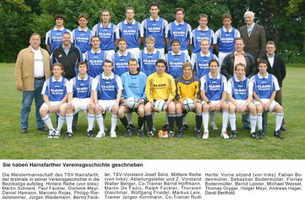
Meistermannschaft 2004/05
2005–2006 · Die Bezirksliga und der TSV
Unser lang ersehnter Traum ging unter der Leitung von Jürgen Kornmann in Erfüllung. Sehr schwierig gestaltete sich das Jahr 2005/06 mit dem Start in die Bezirksliga. Routinierte Gegner und eine noch schnellere und robustere Spielweise waren jetzt an der Tagesordnung. Wir kamen nicht richtig zu unserem Spiel, schossen erst im vierten Spiel unser erstes Tor und waren von Anfang an mit dem Abstieg beschäftigt. Nach dem 8. Spieltag trennten sich die Wege zwischen dem TSV und Jürgen Kornmann und als Interimscoach konnte Rudi Hertle, der bisherige Co-Trainer gewonnen werden. Mit ihm gelangen uns sofort zwei Siege in Folge, ein 4:1 gegen den späteren Meister SSV Höchstädt und 4:1 in Langenmosen. Hoffnung keimte wieder auf. Am 04.11.2005 kam mit Dieter Eckstein, einem Ex-Nationalspieler und Bundesligaprofi, ein neuer Trainer am Hainsfarther Burschel. Er gab sich keinen Illusionen hin und deutete bereits in den ersten Gesprächen an, dass es schwierig werden würde, den Abstieg zu vermeiden. Auch unter seiner Regie ging es nicht weiter voran, zumal er nicht sofort spielberechtigt für uns war. Nach zwei Siegen, einem Unentschieden und mehreren Niederlagen in der Rückrunde war schnell klar, dass der Abstieg unausweichlich war. In dieser schwierigen Zeit mussten Planungen für die nächste Saison erstellt werden, wobei sich herausstellte, dass man nicht mit Dieter Eckstein in der Kreisliga weiter spielen würde. Nach dieser Erkenntnis beendete Dieter Eckstein sein Engagement beim TSV. Sein bisheriger Assistent Bernd Hoffmann führte die Mannschaft bis zum Saisonende, der Abstieg aus der Bezirksliga war vorher leider schon besiegelt.
2006–2008 · Neuer Trainer, neues Glück
Einen erneuten Start in die Kreisliga machten wir mit dem jungen Trainer Torsten Joas. Durchaus erfolgreich verlief das erste Jahr, was letztendlich mit einem 6. Platz abgeschlossen werden konnte. Die zweite Spielzeit unter seiner Leitung gestaltete sich schon schwieriger, die Motivation der Spieler ging immer weiter abwärts und die Trainingsbesuche wurden geringer. Die Vorstandschaft war gezwungen zu handeln und stellte mit Fritz Walpertinger einen neuen Trainer vor.
Seine sofortige Zusage und die Bereitschaft, sich für den TSV zu engagieren, waren für beide Seiten von Nutzen. In seinem ersten Trainerjob konnte er leider trotz einiger Erfolge den Abwärtstrend nicht verhindern und wir mussten 2007/08 den Weg in die Kreisklasse antreten. Die Integration von jungen Spielern in die erste Seniorenmannschaft war sein großes Anliegen – was ihm auch mit Erfolg gelungen ist.
Guten Mutes sehen wir in die Zukunft!
Unser Juniorenbereich ist mit vielen Talenten bestückt, die mit viel Ehrgeiz, Fleiß und Willen den Weg nach oben schaffen können und sicherlich auch werden.
Wir freuen uns heute schon darauf, mit unserer Mannschaft wieder in der Kreisliga zu spielen.